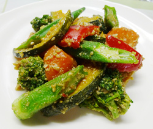

緑黄色野菜のごま和え
- 調理時間：20 分
- （一人当たり）
- カロリー：235kcal
- たんぱく質：7.3g
- 脂質：12.5g
- 塩分：0.8g


＜２人分＞
- カボチャ
- 100g
- オクラ
- 2本
- パプリカ
- 1/6個
- ブロッコリー
- 40g
- ニンジン
- 40g
- ・すり白ごま
- 大さじ3
- ・砂糖
- 小さじ2
- ・みりん
- 小さじ1
- ・醤油
- 小さじ2
あえ衣 A


- カボチャは5㎜厚さに切る。オクラは斜め切り。パプリカとニンジンは乱切り。
ブロッコリーは小房にわける。 - 湯を沸かして、野菜を各々ゆでる。
ザルに上げて広げ、うちわなどであおいで手早く冷ます。 - ボウルにAをいれてよく混ぜ合わせる。野菜を加えて和える。
緑黄色野菜のごま和え
毎年11月に実施される国民健康・栄養調査。毎年実施している基本項目として、20歳以降の野菜の摂取量の平均値が公表されています。その結果は、野菜摂取量の平均値は293.6g であり、男女別にみると男性299.4g、女性288.7g である。そのうち、緑黄色野菜の平均値は99.2gでした（平成27年調査）。
現在、野菜摂取量の目標値は350g。このうち120g程度は緑黄色野菜で摂ることがすすめられています。
１人当たり、小鉢一皿分の野菜を増やしていけると健康寿命に影響が現れると言われています。もう一皿の野菜料理を増やすことを心がけてはみませんか。